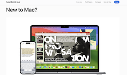

Visual Hierarchy
The Church of Jesus Christ of Latter-Day Saints
ChurchofJesusChrist.orgThis website, and more particularly this part of the website, is an excellent example of visual hierarchy. There are clear places where our eyes go to first, second, and third, and so on. The images and text are well sized and it grabs the attention of the user in meaningful ways without detracting from the importance of the information provided.
Fitt's Law
Google's search bar is a great example of Fitt's law because the target, or the search bar, is right in front of your face, and the mouse does not have to travel far to get to it. It's pretty obvious that it is the most important part to the page, and undoubtedly is one of the easiest and quickest to navigate sites to ever exist.
White Space and Clean Design
Apple
Apple.com Apple has a ton of whitespace on their site, yet it is entirely visually appealing. Similar to how we don't fill the entire space of a living room, we don't want to fill an entire web page either. Apple does a great job of this, and it gives the site a modern look that definitely grabs the user's attention.